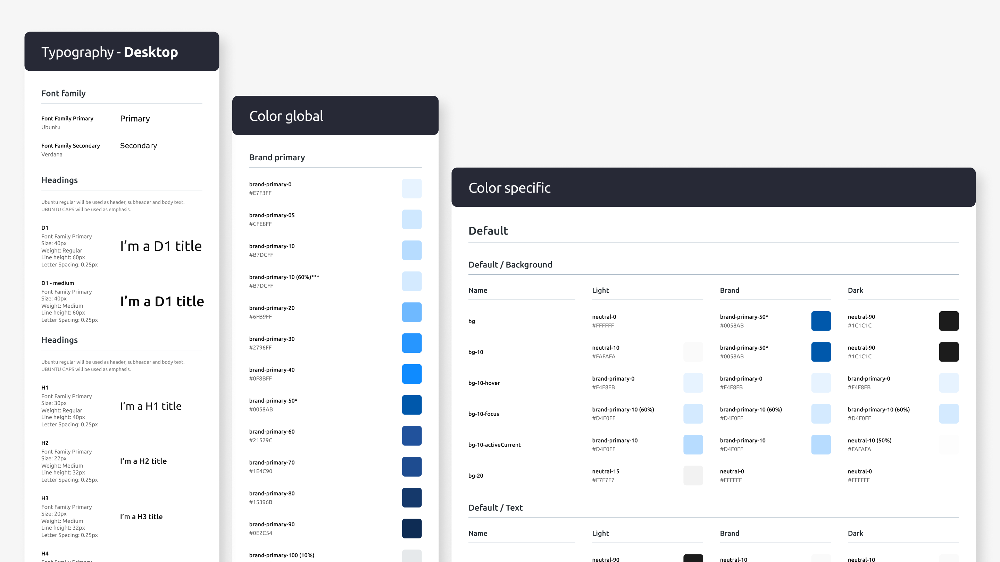
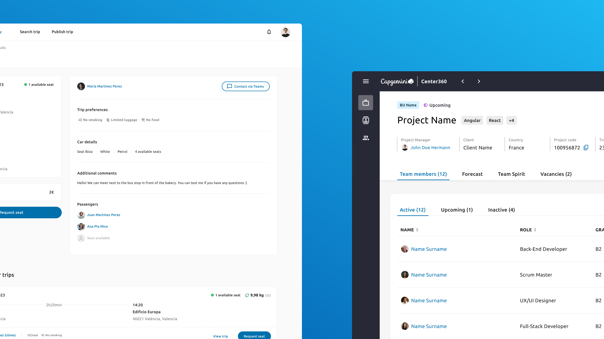

01 · Challenge
The Challenge
When I joined ADCenter Spain, there was no design system. There was a style guide — outdated, ungoverned, and largely ignored. Each product had its own visual language: buttons varied in shape and behavior, navigation patterns conflicted across tools, and accessibility was inconsistent. Designers worked from instinct, developers rebuilt components from scratch for every project, and the disconnect was visible to users.
This wasn't just a visual consistency problem — it was a scalability bottleneck. Every new product meant reinventing the UI from zero. Every update meant touching multiple codebases manually. And the lack of shared standards meant quality depended entirely on whoever happened to be building that particular feature.
I recognized the opportunity early and made the case for building a design system.
Fragmented UI
Buttons, navigation, and interaction patterns varied across every product with no shared baseline.
Zero Reusability
Developers rebuilt components from scratch for every project — no shared library, no shared standards.
No Accessibility
Compliance was entirely accidental — no standards, no auditing, no shared baseline for any team.
No Governance
The style guide had no owner, no update process, and no enforcement — ignored by everyone by default.
"The goal wasn't just a component library — it was to create a shared language between design and development that would reduce waste, improve quality, and let teams move faster with confidence."
02 · Research
Understanding the Problem
Before building anything, I ran workshops and interviews across design, development, and product teams. Four root causes emerged consistently.
Finding 01
No ownership, no updates
The old style guide had no governance — no one owned it, updated it, or enforced it.
Finding 02
Design–dev silos
Teams worked in isolation, frequently duplicating effort without knowing it.
Finding 03
Two frameworks, doubled work
Angular and React codebases meant a well-built component had to be rebuilt entirely for the other stack.
Finding 04
Accessibility was an afterthought
No standards existed — compliance was accidental at best, inconsistent at worst.
Core Insight
The problem wasn't missing components — it was missing alignment. People, process, and tools were all disconnected. A component library alone wouldn't fix that; it needed structure, documentation, and governance to sustain itself.
03 · Scoping
Scoping V1: What to Build First
This is where a design system initiative can easily go wrong — trying to build everything at once. I deliberately scoped V1 as an MVP focused on the highest-frequency components across our internal tools.

The reasoning was simple: ship a focused, well-documented foundation that teams could start using immediately, then iterate based on real adoption feedback.
Everyone naturally wanted more — the scope of what teams needed was real, and "under construction" isn't what you want to hear when you've been working around fragmented UI for years. The discipline the V1 approach required was sequencing: committing to a foundation small enough to ship well, and trusting that adoption would prove the case for expanding it. That assumption held. Once teams started building new work on the foundation rather than around it, the roadmap for V2 gained momentum without needing to be sold.
04 · Adoption
Building Adoption
A design system only works if people actually use it. I treated adoption the same way I'd treat any product challenge: understand resistance, reduce friction, create pull.
The Developer Resistance Story
Skepticism was a signal, not an obstacle
Initially, the development team was resistant. They'd seen style guides before — documents that created overhead without reducing their workload. Their concern was valid: they feared the DS would add complexity, not remove it.
Rather than pushing adoption top-down, I focused on documentation quality — practical implementation guidance that helped developers do their jobs faster. The turning point came when they saw that well-documented, reusable components eliminated the rebuild cycle they'd been stuck in. Once they experienced the time savings firsthand, resistance disappeared.
Rituals that sustained momentum
Weekly cross-functional syncs
Short sessions to surface blockers, review new components, and align on priorities — the heartbeat of the DS.
Open backlog in Notion
Full transparency on what was being built and why. Anyone could propose additions or flag issues at any time.
Design team reviews
Weekly calls to address DS questions, check for adoption blockers, and keep all designers aligned.
05 · Governance
Governance: Making It Last
A design system without governance becomes another abandoned style guide. I established a contribution and evolution model from day one.
Anyone could propose a new component or modification. Proposals went through review — is it needed across multiple products? Does it meet accessibility standards? Is it documented? — before being merged into the system.
The DS evolved through continuous feedback loops, not big-bang releases. Weekly syncs surfaced what was working; the Notion backlog kept priorities transparent and visible to all.
While I led the initiative, the goal was shared ownership. Designers contributed validated patterns, developers flagged implementation gaps, and the DS reflected the collective needs of the teams using it.
06 · Impact
Impact
Across 3–5 internal products, the DS delivered measurable improvements across every metric we tracked.
Measured outcomes · First 3 months

The DS is currently adopted across 3–5 internal products and continues to evolve. The web component library is under development to enable full cross-framework compatibility between Angular and React.
07 · Reflections
Reflections
01
Start with what teams use most, not what looks impressive
The temptation with a design system is to build the flashiest components first. The reality is that getting buttons, inputs, and spacing right — and documenting them well — has more impact on daily workflow than any complex pattern.
02
Documentation is the product
The components themselves are important, but what made adoption stick was the documentation. When a developer can find the answer without asking someone, you've reduced friction at scale.
03
Resistance is feedback, not opposition
The initial developer skepticism wasn't a problem to overcome — it was a signal about what they needed. They didn't want more design rules; they wanted tools that made their work easier. Listening to that shaped how I built and documented everything.
04
Governance defines whether a DS lives or dies
Building components is the visible work. Establishing how they evolve, who contributes, and how decisions get made is the work that determines whether the system is still relevant in a year.